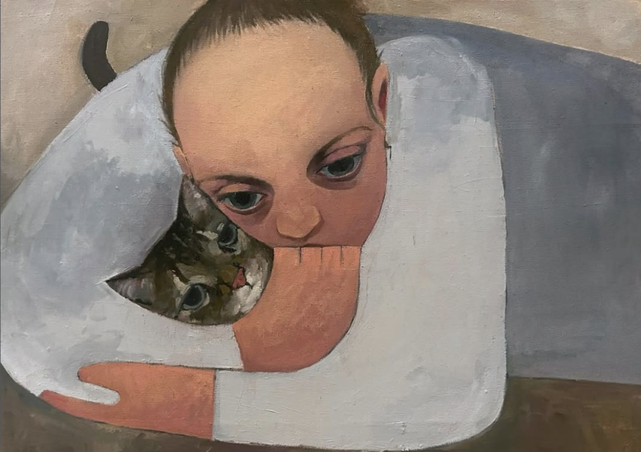

Hearth: Kai Boone, Carmen Casillas, Fatimah Farooqi, Beck Lech, and Maddalena Piazza
Hearth
Kai Boone, Carmen Casillas, Fatimah Farooqi, Beck Lech, and Maddalena Piazza
Opening Reception
Sunday, April 19, 2026, 3:00 – 6:00 pm
Join us afterwards for a Private Cocktail Hour at the Quincy Street Distillery
Artist Talk: Saturday, May 16, 2026, 3:00 pm
Exhibition Dates: April 19 – May 23, 2026
Gallery Hours: Thursdays, Fridays, and Saturdays, 1:00 – 5:00 pm